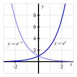
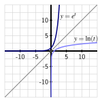
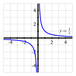
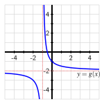

Section5.1Infinito, límites y funciones de potencia
Motivating Questions
¿Cómo podemos usar la notación de límite para expresar sucintamente el comportamiento de una función a medida que la entrada aumenta sin límite o a medida que el valor de la función aumenta sin límite?
¿Cuáles son algunos límites y tendencias importantes que involucran \(\infty\) que podemos observar en funciones familiares como \(e^x\text{,}\)\(\ln(x)\text{,}\)\(x^2\) y \(\frac{1}{x}\text{?}\)
¿Qué es una función de potencia y cómo determina el valor de la potencia el comportamiento general de la función?
En Sección 3.2, comparamos el comportamiento de las funciones exponenciales \(p(t) = 2^t\) y \(q(t) = (\frac{1}{2})^t\text{,}\) y observamos en Figura 3.2.5 que a medida que \(t\) aumenta sin límite, \(p(t)\) también aumenta sin límite, mientras que \(q(t)\) se aproxima a \(0\) (aunque su valor siempre sea positivo). También introdujimos una notación abreviada para describir estos fenómenos, escribiendo
\begin{equation*}
p(t) \to \infty \text{ as } t \to \infty
\end{equation*}
y
\begin{equation*}
q(t) \to 0 \text{ as } t \to \infty\text{.}
\end{equation*}
Es importante recordar que el infinito no es en sí mismo un número. Usamos el símbolo “\(\infty\)” para representar una cantidad que se hace cada vez más grande sin límite en su crecimiento.
También sabemos que el concepto de infinito juega un papel clave en la comprensión del comportamiento gráfico de las funciones. Por ejemplo, hemos visto que para una función como \(F(t) = 72 - 45e^{-0.05t}\text{,}\)\(F(t) \to 72\) a medida que \(t \to \infty\text{,}\) ya que \(e^{-0.05t} \to 0\) a medida que \(t\) aumenta sin límite. La función \(F\) puede verse como un modelo de la temperatura de un objeto que inicialmente es \(F(0) = 72-45 = 27\) grados y que eventualmente se calienta a \(72\) grados. La línea \(y = 72\) es asíntota horizontal de la función \(F\text{.}\)
En Vista previa 5.1.1, revisamos algunas funciones familiares y partes de su comportamiento que involucran \(\infty\text{.}\)
Preview Activity5.1.1.
Completa cada una de las siguientes afirmaciones con un número apropiado o los símbolos \(\infty\) o \(-\infty\text{.}\) Haz tu mejor esfuerzo para hacerlo sin usar una utilidad de graficación; en su lugar, usa tu comprensión del gráfico de la función.
A medida que \(t \to \infty\text{,}\)\(e^{-t} \to \) .
A medida que \(t \to \infty\text{,}\)\(\ln(t) \to \) .
A medida que \(t \to \infty\text{,}\)\(e^{t} \to \) .
A medida que \(t \to 0^+\text{,}\)\(e^{-t} \to \) . (Cuando escribimos \(t \to 0^+\text{,}\) esto significa que estamos dejando que \(t\) se acerque cada vez más a \(0\text{,}\) pero solo permitiendo que \(t\) tome valores positivos.)
A medida que \(t \to \infty\text{,}\)\(35 + 53e^{-0.025t} \to\) .
A medida que \(t \to \frac{\pi}{2}^-\text{,}\)\(\tan(t) \to \). (Cuando escribimos \(t \to \frac{\pi}{2}^-\text{,}\) esto significa que estamos dejando que \(t\) se acerque cada vez más a \(\frac{\pi}{2}^-\text{,}\) pero solo permitiendo que \(t\) tome valores que se encuentran a la izquierda de \(\frac{\pi}{2}\text{.}\))
A medida que \(t \to \frac{\pi}{2}^+\text{,}\)\(\tan(t) \to \). (Cuando escribimos \(t \to \frac{\pi}{2}^+\text{,}\) esto significa que estamos dejando que \(t\) se acerque cada vez más a \(\frac{\pi}{2}^+\text{,}\) pero solo permitiendo que \(t\) tome valores que se encuentran a la derecha de \(\frac{\pi}{2}\text{.}\))
Subsection5.1.1Notación de límites
Cuando observamos un patrón en los valores de una función que corresponden a dejar que las entradas se acerquen cada vez más a un valor fijo o dejar que las entradas aumenten o disminuyan sin límite, a menudo nos interesa el comportamiento de la función “en el límite”. En cualquier caso, estamos considerando una colección infinita de entradas que siguen un patrón, y nos preguntamos “¿cómo podemos esperar que se comporte la salida de la función si continuamos?”
Por ejemplo, hemos observado regularmente que “cuando \(t \to \infty\text{,}\)\(e^{-t} \to 0\text{,}\)” lo que significa que al permitir que \(t\) se haga cada vez más grande sin límite, podemos hacer que \(e^{-t}\) se acerque tanto a \(0\) como queramos (sin que \(e^{-t}\) llegue a ser igual a \(0\text{,}\) ya que \(e^{-t}\) siempre es positivo).
Figure5.1.1.Gráficas de \(y = e^t\) y \(y = e^{-t}\text{.}\)
Figure5.1.2.Gráficas de \(y = e^t\) y \(y = \ln(t)\text{.}\)
De manera similar, como se ve en Figura 5.1.1 y Figura 5.1.2, podemos hacer observaciones como \(e^t \to \infty\) cuando \(t \to \infty\text{,}\)\(\ln(t) \to \infty\) cuando \(t \to \infty\text{,}\) y \(\ln(t) \to -\infty\) cuando \(t \to 0^+\text{.}\) Introducimos la notación de límites formal para poder expresar estos patrones de manera aún más concisa.
Definition5.1.3.
Sea \(L\) un número real y \(f\) una función. Si podemos hacer que el valor de \(f(t)\) se acerque tanto a \(L\) como queramos dejando que \(t\) aumente sin límite, escribimos
\begin{equation*}
\lim_{t \to \infty} f(t) = L
\end{equation*}
y decimos que el límite de \(f\) cuando \(t\) aumenta sin límite es \(L\).
Si el valor de \(f(t)\) aumenta sin límite cuando \(t\) aumenta sin límite, en su lugar escribimos
Finalmente, si \(f\) no aumenta sin límite, no disminuye sin límite y no se acerca a un solo valor \(L\) cuando \(t \to \infty\text{,}\) decimos que \(f\) no tiene un límite cuando \(t \to \infty\).
Usamos la notación de límites de maneras relacionadas y naturales para expresar los patrones que vemos en el comportamiento de las funciones. Por ejemplo, escribimos \(t \to -\infty\) cuando dejamos que \(t\) disminuya sin límite, y \(f(t) \to -\infty\) si \(f\) disminuye sin límite. También podemos pensar en un valor de entrada \(t\) acercándose a un valor \(a\) en el cual la función \(f\) no está definida. Como un ejemplo, escribimos
porque la función del logaritmo natural disminuye sin límite a medida que los valores de entrada se acercan cada vez más a \(0\) (mientras siempre son positivos), como se ve en Figura 5.1.2.
En la situación donde \(\lim_{t \to \infty} f(t) = L\text{,}\) esto nos dice que \(f\) tiene una asíntota horizontal en \(y = L\) ya que el valor de la función se acerca a este número fijo cuando \(t\) aumenta sin límite. De manera similar, si podemos decir que \(\lim_{t \to a} f(t) = \infty\text{,}\) esto muestra que \(f\) tiene una asíntota vertical en \(x = a\) ya que el valor de la función aumenta sin límite a medida que las entradas se acercan al número fijo \(a\text{.}\)
Por ahora, vamos a centrarnos en el comportamiento a largo plazo de ciertas funciones básicas y familiares y trabajaremos para entender cómo se comportan a medida que la entrada aumenta o disminuye sin límite. Arriba hemos usado la variable de entrada \(t\) en la mayoría de nuestro trabajo anterior; en adelante, también usaremos regularmente \(x\text{.}\)
Activity5.1.2.
Completa la Tabla 5.1.4 ingresando “\(\infty\text{,}\)” “\(-\infty\text{,}\)” “\(0\text{,}\)” o “sin límite” para identificar cómo se comporta la función a medida que \(x\) aumenta o disminuye sin límite. En la medida de lo posible, trabaja para decidir el comportamiento sin usar una utilidad de graficación.
Table5.1.4.Algunas funciones familiares y sus límites cuando \(x \to \infty\) o \(x \to -\infty\text{.}\)
\(f(x)\)
\(\lim_{x \to \infty} f(x)\)
\(\lim_{x \to -\infty} f(x)\)
\(e^x\)
\(e^{-x}\)
\(\ln(x)\)
\(x\)
\(x^2\)
\(x^3\)
\(x^4\)
\(\frac{1}{x}\)
\(\frac{1}{x^2}\)
\(\sin(x)\)
Subsection5.1.2Funciones de potencia
Hasta la fecha, hemos trabajado con varias familias de funciones: funciones lineales de la forma \(y = mx + b\text{,}\) funciones cuadráticas en forma estándar, \(y = ax^2 + bx + c\text{,}\) las funciones sinusoidales (trigonométricas) \(y = a\sin(k(x-b))+c\) o \(y = a\cos(k(x-b))+c\text{,}\) funciones exponenciales transformadas como \(y = ae^{kx} + c\text{,}\) y funciones logarítmicas transformadas de la forma \(y = a\ln(x) + c\text{.}\) Para las funciones trigonométricas, exponenciales y logarítmicas, fue esencial que primero entendiéramos el comportamiento de las funciones básicas parentales \(\sin(x)\text{,}\)\(\cos(x)\text{,}\)\(e^x\text{,}\) y \(\ln(x)\text{.}\) Para construir sobre nuestro trabajo previo con funciones lineales y cuadráticas, ahora consideramos funciones básicas como \(x\text{,}\)\(x^2\text{,}\) y potencias adicionales de \(x\text{.}\)
Definition5.1.5.
Una función de la forma \(f(x) = x^p\) donde \(p\) es cualquier número real se llama función de potencia.
Primero nos enfocamos en el caso donde \(p\) es un número natural (es decir, un número entero positivo).
. En lo que sigue, exploramos el comportamiento de las funciones de potencia de la forma \(y = x^n\) donde \(n \ge 1\text{.}\)
Presiona el botón “play” junto al deslizador etiquetado “\(n\text{.}\)” Observa al menos dos bucles de la animación y luego discute las tendencias que observas. Escribe una oración cuidadosa para al menos dos tendencias diferentes.
Haz clic en los íconos junto a cada una de las siguientes 8 funciones para que puedas ver todas \(y = x\text{,}\)\(y = x^2\text{,}\)\(\ldots\text{,}\)\(y = x^8\) graficadas a la vez. En el intervalo \(0 \lt x \lt 1\text{,}\) ¿cómo se comparan las gráficas de \(x^a\) y \(x^b\) si \(a \lt b\text{?}\)
Desmarca los íconos en cada una de las 8 funciones para ocultar sus gráficas. Haz clic en el ícono de configuración para cambiar la configuración del dominio de los ejes, y cámbialos a \(-10 \le x \le 10\) y \(-10,000 \le y \le 10,000\text{.}\) Reproduce la animación dos veces y luego discute las tendencias que observas. Escribe una oración cuidadosa para al menos dos tendencias diferentes.
Haz clic en los íconos junto a cada una de las siguientes 8 funciones para que puedas ver todas \(y = x\text{,}\)\(y = x^2\text{,}\)\(\ldots\text{,}\)\(y = x^8\) graficadas a la vez. En el intervalo \(x \gt 1\text{,}\) ¿cómo se comparan las gráficas de \(x^a\) y \(x^b\) si \(a \lt b\text{?}\)
En la situación donde la potencia \(p\) es un número entero negativo (es decir, un número entero negativo), las funciones de potencia se comportan de manera muy diferente. Esto se debe a la propiedad de los exponentes que dice
por lo que para una función de potencia como \(p(x) = x^{-2}\text{,}\) podemos considerar de manera equivalente \(p(x) = \frac{1}{x^2}\text{.}\) Nota bien que para estas funciones, su dominio es el conjunto de todos los números reales excepto \(x = 0\text{.}\) Al igual que con las funciones de potencia con potencias de números enteros positivos, queremos saber cómo se comportan las funciones de potencia con potencias de números enteros negativos a medida que \(x\) aumenta sin límite, así como cómo se comportan las funciones cerca de \(x = 0\text{.}\)
. En lo que sigue, exploramos el comportamiento de las funciones de potencia \(y = x^n\) donde \(n \le -1\text{.}\)
Presiona el botón “play” junto al deslizador etiquetado “\(n\text{.}\)” Observa dos bucles de la animación y luego discute las tendencias que observas. Escribe una oración cuidadosa para al menos dos tendencias diferentes.
Haz clic en los íconos junto a cada una de las siguientes 8 funciones para que puedas ver todas \(y = x^{-1}\text{,}\)\(y = x^{-2}\text{,}\)\(\ldots\text{,}\)\(y = x^{-8}\) graficadas a la vez. En el intervalo \(1 \lt x\text{,}\) ¿cómo se comparan las funciones \(x^a\) y \(x^b\) si \(a \lt b\text{?}\) (Ten cuidado con los números negativos aquí: por ejemplo, \(-3 \lt -2\text{.}\))
¿Cómo cambian tus respuestas en el intervalo \(0 \lt x \lt 1\text{?}\)
Desmarca los íconos en cada una de las 8 funciones para ocultar sus gráficas. Haz clic en el ícono de configuración para cambiar la configuración del dominio de los ejes, y cámbialos a \(-10 \le x \le 10\) y \(-10,000 \le y \le 10,000\text{.}\) Reproduce la animación dos veces y luego discute las tendencias que observas. Escribe una oración cuidadosa para al menos dos tendencias diferentes.
Explica por qué \(\lim_{x \to \infty} \frac{1}{x^n} = 0\) para cualquier elección de \(n = 1, 2, \ldots\text{.}\)
Subsection5.1.3Summary
La notación
\begin{equation*}
\lim_{x \to \infty} f(x) = L
\end{equation*}
significa que podemos hacer el valor de \(f(x)\) tan cercano a \(L\) como queramos dejando que \(x\) sea suficientemente grande. Esto indica que el valor de \(f\) eventualmente deja de cambiar mucho y tiende a un solo valor, y por lo tanto \(y = L\) es una asíntota horizontal de la función \(f\text{.}\)
significa que podemos hacer el valor de \(f(x)\) tan grande como queramos dejando que \(x\) esté suficientemente cerca, pero no igual, a \(a\text{.}\) Este comportamiento ilimitado de \(f\) cerca de un valor finito \(a\) indica que \(f\) tiene una asíntota vertical en \(x = a\text{.}\)
Resumimos algunos comportamientos clave de funciones básicas conocidas con límites a medida que \(x\) aumenta sin límite en Tabla 5.1.6.
Table5.1.6.Algunas funciones conocidas y sus límites cuando \(x \to \infty\) o \(x \to -\infty\text{.}\)
\(f(x)\)
\(\lim_{x \to \infty} f(x)\)
\(\lim_{x \to -\infty} f(x)\)
\(e^x\)
\(\infty\)
\(0\)
\(e^{-x}\)
\(0\)
\(\infty\)
\(\ln(x)\)
\(\infty\)
NA 3
Porque el dominio de la función logaritmo natural son solo números reales positivos, no tiene sentido considerar este límite.
\(x\)
\(\infty\)
\(-\infty\)
\(x^2\)
\(\infty\)
\(\infty\)
\(x^3\)
\(\infty\)
\(-\infty\)
\(x^4\)
\(\infty\)
\(\infty\)
\(\frac{1}{x}\)
\(0\)
\(0\)
\(\frac{1}{x^2}\)
\(0\)
\(0\)
\(\sin(x)\)
sin límite 4
Porque la función seno ni aumenta sin límite ni se aproxima a un solo valor, sino que sigue oscilando a través de cada valor entre \(-1\) y \(1\) repetidamente, la función seno no tiene un límite cuando \(x \to \infty\text{.}\)
sin límite
Además, Tabla 5.1.7 resume algunos comportamientos clave de funciones conocidas donde la salida de la función aumenta o disminuye sin límite a medida que \(x\) se aproxima a un número fijo que no está en el dominio de la función.
Table5.1.7.Algunas funciones conocidas y sus límites que involucran \(\infty\) cuando \(x \to a\) donde \(a\) no está en el dominio de la función.
Una función de potencia es una función de la forma \(f(x) = x^p\) donde \(p\) es cualquier número real. Para los dos casos donde \(p\) es un número entero positivo o un número entero negativo, es sencillo resumir las tendencias clave en el comportamiento de las funciones de potencia.
Si \(p = 1, 2, 3, \ldots\text{,}\) entonces el dominio de \(f(x) = x^p\) es el conjunto de todos los números reales, y a medida que \(x \to \infty\text{,}\)\(f(x) \to \infty\text{.}\) Para el límite cuando \(x \to -\infty\text{,}\) importa si \(p\) es par o impar: si \(p\) es par, \(f(x) \to \infty\) cuando \(x \to -\infty\text{;}\) si \(p\) es impar, \(f(x) \to -\infty\) cuando \(x \to -\infty\text{.}\) Informalmente, todas las funciones de potencia de la forma \(f(x) = x^p\) donde \(p\) es un número par positivo tienen forma de “U”, mientras que todas las funciones de potencia de la forma \(f(x) = x^p\) donde \(p\) es un número impar positivo tienen forma de “silla”.
Si \(p = -1, -2, -3, \ldots\text{,}\) entonces el dominio de \(f(x) = x^p\) es el conjunto de todos los números reales excepto\(x=0\text{,}\) y a medida que \(x \to \pm \infty\text{,}\)\(f(x) \to 0\text{.}\) Esto significa que cada función de potencia con un exponente entero negativo tiene una asíntota horizontal de \(y = 0\text{.}\) Independientemente del valor de \(p\) (\(p = -1, -2, -3, \ldots\)), \(\lim_{x \to 0^+} f(x) = \infty\text{.}\) Pero cuando nos acercamos a \(0\) desde el lado negativo, importa si \(p\) es par o impar: si \(p\) es par, \(f(x) \to \infty\) cuando \(x \to 0^-\text{;}\) si \(p\) es impar, \(f(x) \to -\infty\) cuando \(x \to 0^-\text{.}\) Informalmente, todas las funciones de potencia de la forma \(f(x) = x^p\) donde \(p\) es un número impar negativo se parecen a \(\frac{1}{x}\text{,}\) mientras que todas las funciones de potencia de la forma \(f(x) = x^p\) donde \(p\) es un número par negativo se parecen a \(\frac{1}{x^2}\text{.}\)
Exercises5.1.4Exercises
1.
Hemos observado que varias funciones familiares diferentes crecen sin límite cuando \(x \to \infty\text{,}\) incluyendo \(f(x) = \ln(x)\text{,}\)\(g(x) = x^2\text{,}\) y \(h(x) = e^x\text{.}\) En este ejercicio, comparamos y contrastamos cómo crecen estas tres funciones.
Usa un dispositivo computacional para calcular expresiones decimales para \(f(10)\text{,}\)\(g(10)\text{,}\) y \(h(10)\text{,}\) así como \(f(100)\text{,}\)\(g(100)\text{,}\) y \(h(100)\text{.}\) ¿Qué observas?
Para cada una de \(f\text{,}\)\(g\text{,}\) y \(h\text{,}\) ¿qué tan grande debe ser una entrada para asegurar que el valor de salida de la función sea al menos \(10^{10}\text{?}\) ¿Qué nos dicen estos valores sobre cómo crece cada función?
Considera la nueva función \(r(x) = \frac{g(x)}{h(x)} = \frac{x^2}{e^x}\text{.}\) Calcula \(r(10)\text{,}\)\(r(100)\text{,}\) y \(r(1000)\text{.}\) ¿Qué sugieren los resultados sobre el comportamiento a largo plazo de \(r\text{?}\) ¿Qué es sorprendente sobre esto, a la luz del hecho de que tanto \(x^2\) como \(e^x\) crecen sin límite?
2.
Considera el gráfico familiar de \(f(x) = \frac{1}{x}\text{,}\) que tiene una asíntota vertical en \(x = 0\) y una asíntota horizontal en \(y = 0\text{,}\) como se muestra en Figure 5.1.8. Además, considera la función de forma similar \(g\) mostrada en Figure 5.1.9, que tiene una asíntota vertical en \(x = -1\) y una asíntota horizontal en \(y = -2\text{.}\)
Figure5.1.8.Un gráfico de \(y = f(x) = \frac{1}{x}\text{.}\)
Figure5.1.9.Un gráfico de una función relacionada \(y = g(x)\text{.}\)
¿Cómo podemos ver \(g\) como una transformación de \(f\text{?}\) Explica, y di cómo \(g\) puede expresarse algebraicamente en términos de \(f\text{.}\)
Encuentra una fórmula para \(g\) como una función de \(x\text{.}\) ¿Cuál es el dominio de \(g\text{?}\)
Explica algebraicamente (usando la forma de \(g\) de (b)) por qué \(\lim_{x \to \infty} g(x) = -2\) y \(\lim_{x \to -1^+} g(x) = \infty\text{.}\)
¿Qué pasa si una función \(h\) (de forma similar a \(f\)) tiene una asíntota vertical en \(x = 5\) y una asíntota horizontal en \(y = 10\text{?}\) ¿Cuál es una posible fórmula para \(h(x)\text{?}\)
Supón que \(r(x) = \frac{1}{x+35} - 27\text{.}\)Sin usar una utilidad de graficación, ¿cómo esperas que se vea el gráfico de \(r\text{?}\) ¿Tiene una asíntota horizontal? ¿Una asíntota vertical? ¿Cuál es su dominio?
3.
Las funciones de potencia pueden tener exponentes que no son números enteros. Por ejemplo, podemos considerar funciones como \(f(x)=x^{2.4}\text{,}\)\(g(x)=x^{2.5}\text{,}\) y \(h(x)=x^{2.6}\text{.}\)
Compara y contrasta los gráficos de \(f\text{,}\)\(g\text{,}\) y \(h\text{.}\) ¿En qué se parecen? ¿En qué se diferencian? (Hay mucho de lo que puedes hablar aquí.)
Observa que podemos pensar en \(f(x) = x^{2.4}\) como \(f(x) = x^{24/10} = x^{12/5}\text{.}\) Además, recuerda que según las reglas de los exponentes, también podemos ver \(f\) como teniendo la forma \(f(x) = \sqrt[5]{x^{12}}\text{.}\) Escribe \(g\) y \(h\) en formas similares, y explica por qué \(g\) tiene un dominio diferente al de \(f\) y \(h\text{.}\)
¿Cómo se comparan los gráficos de \(f\text{,}\)\(g\text{,}\) y \(h\) con los gráficos de \(y = x^2\) y \(y = x^3\text{?}\) ¿Por qué son estas funciones naturales para usar como comparación?
Explora preguntas similares para los gráficos de \(p(x) = x^{-2.4}\text{,}\)\(q(x) = x^{-2.5}\text{,}\) y \(r(x) = x^{-2.6}\text{.}\)